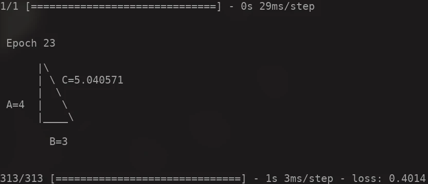

19 Dec 2023
Solving Pythagoras’ Theorem with Neural Networks
In this blog, we’ll explore how to use a neural network to solve Pythagoras’ theorem in real-time in your terminal. This is a great example of how machine learning can be applied to solve real world problems for beginner by using mathematical problems. Let’s break down the Python code and understand each part of it.

Importing Libraries
import numpy as np
from tensorflow import keras
import os
import time
The first step is to import the necessary libraries. numpy is used for numerical computations, tensorflow.keras is used for building and training the neural network, and os and time are used for handling system-level operations, and since we're going to see how neural network works in our terminal, time library will be used as delay and os library will be used to clear terminal.
Generating Data for Training
A = np.random.rand(10000) * 1000
B = np.random.rand(10000) * 1000
C = np.sqrt(A**2 + B**2)
Here, we generate random data for the sides of the triangle (A and B) and calculate the hypotenuse C using Pythagoras’ theorem. This data will be used to train our neural network.
Defining the Model
model = keras.model.Sequential([
keras.layers.Dense(64, activation="relu", input_shape=(2,)),
keras.layers.Dense(64, activation="relu"),
keras.layers.Dense(1)
])
We define a simple neural network model with two hidden layers, each with 64 neurons. The relu activation function is used in the hidden layers. The output layer has one neuron because we want to predict a single value (the hypotenuse).
Compiling the Model
model.compile(optimizer="adam", loss="mse")
The model is compiled with the adam optimizer and the mean squared error (mse) loss function. The optimizer adjusts the weights of the network to minimize the loss, and the loss function measures the difference between the network’s predictions and the actual values.
Defining the Callback
class ClearAndPrintC(keras.callbacks.Callback):
def on_epoch_end(self, epoch, logs=None):
time.sleep(0.5)
if os.name == "nt":
os.system("cls")
else:
os.system("clear")
pred = model.predict([[4, 3]])[0][0]
print(f'''
Epoch {epoch}
|\\
| \\ C={format(pred, ".6f")}
| \\
A=4 | \\
| ________\\
B=3
''')
This is a custom callback that clears the terminal and prints the predicted value of C after each training epoch. This allows us to see the model’s progress in real-time.
Traning The Model
model.fit(np.column_stack((A, B)), C, epochs=50, callbacks=[ClearAndPrintC()])
Finally, the model is trained using the generated data. The fit method is called with the inputs (A and B) and the target values ©. The model is trained for 50 epochs, and our custom callback is passed to visualize the training process.
Conclusion
This example demonstrates how a neural network can learn to solve Pythagoras’ theorem. The same principles can be applied to real-world data. For instance, a similar network could be trained to predict house prices based on features like the number of rooms and the size of the house. The key is to prepare the data correctly and choose an appropriate network architecture for the task at hand.
Full code can be find here: github.com/kritserv/neural-network-solve-pythagoras